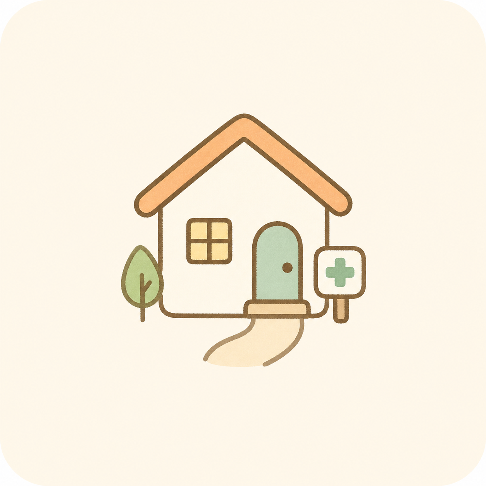
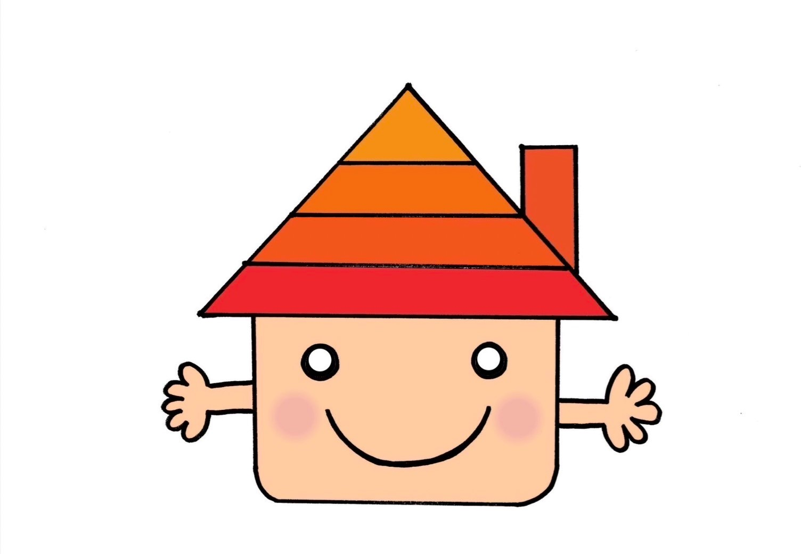
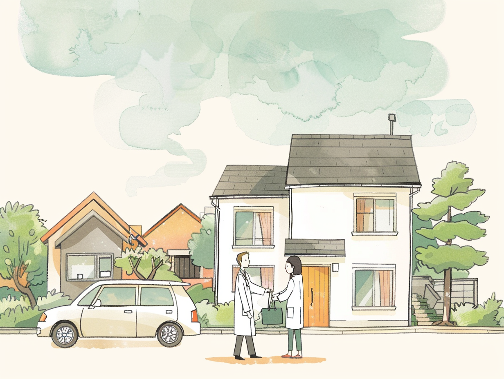
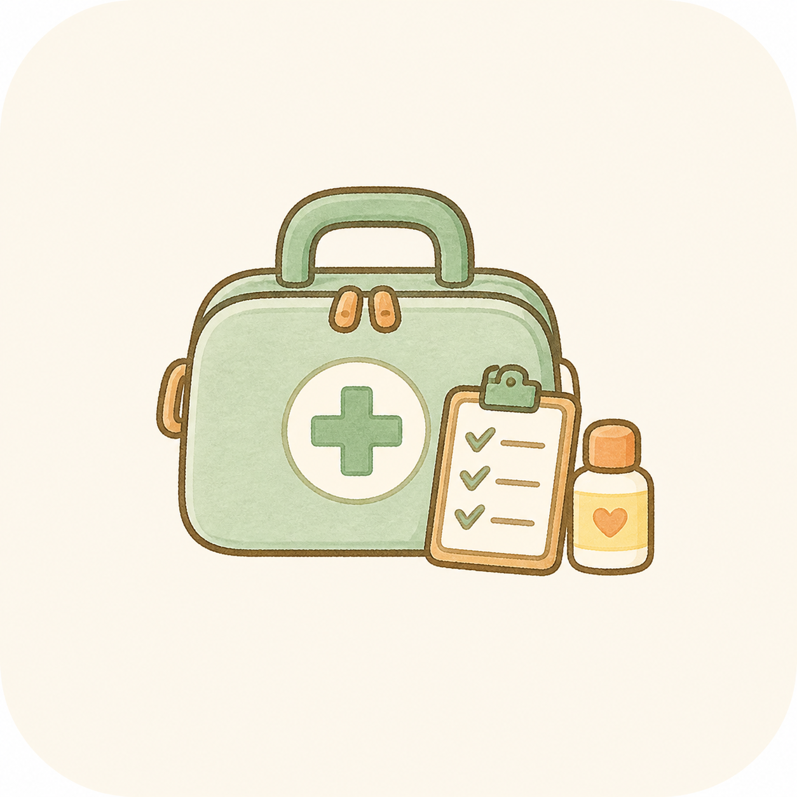
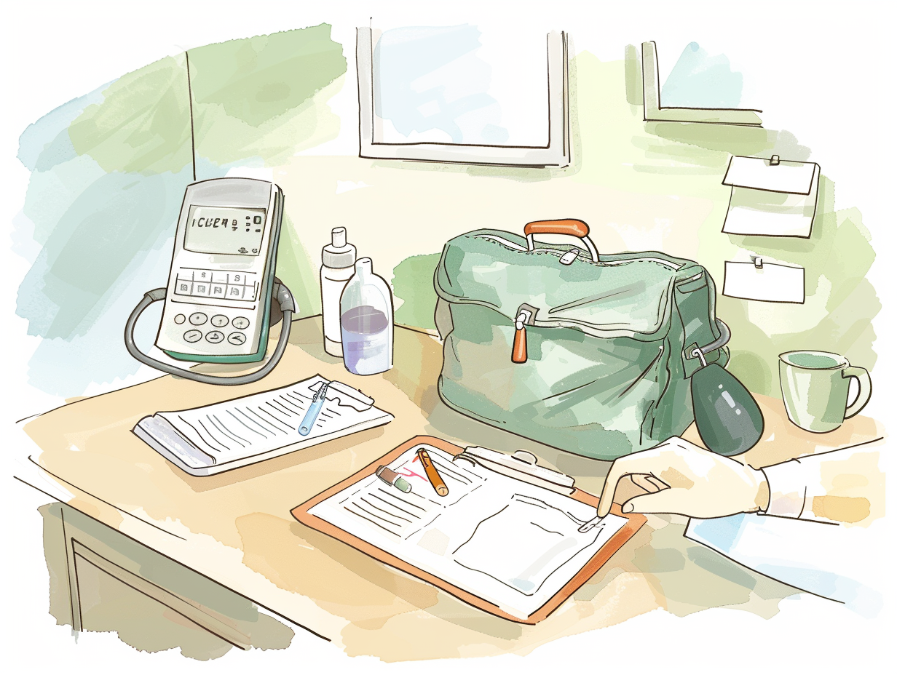
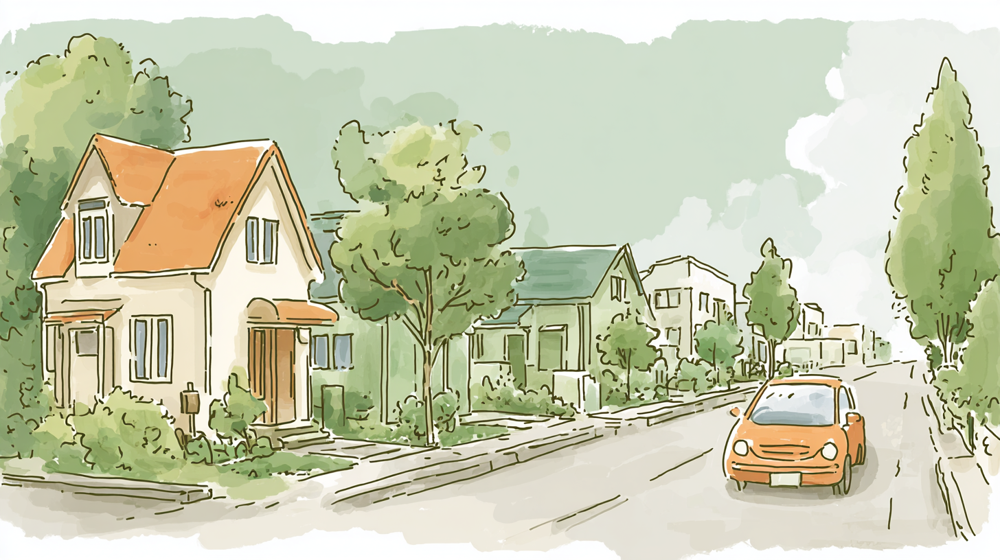
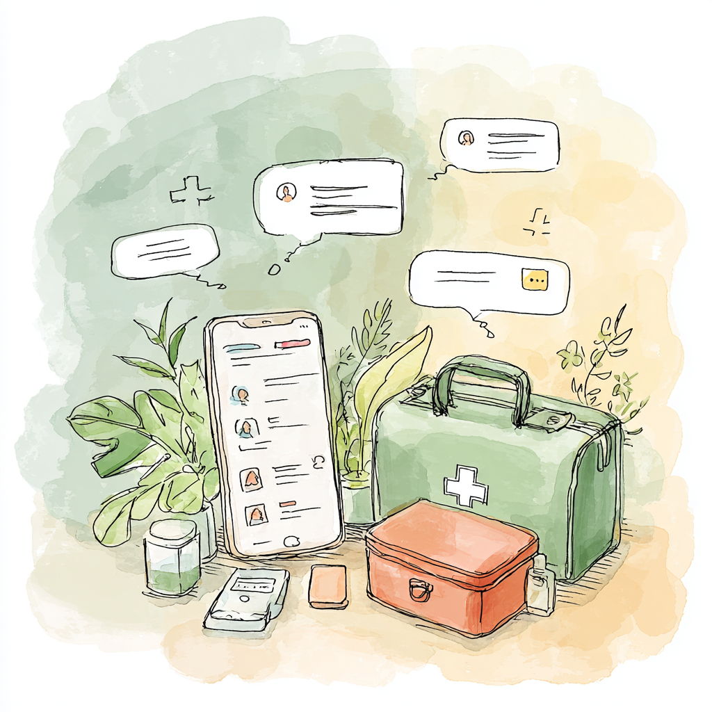

医師と一緒に訪問
患者さま宅へ医師と同行し、診療補助、検査補助、記録、連携を行います。

なりたホームクリニック 看護師・准看護師 採用 見学・相談Narita Home Clinic Recruiting
成田市の訪問診療クリニックで、看護師・准看護師を募集しています。 在宅医療が初めてでも、訪問は医師と一緒。見学やLINE相談から始められます。

訪問診療の仕事が初めてでも、いきなり一人で向かう働き方ではありません。
診療車に乗り、医師と一緒に患者さまの暮らしの場へ伺います。
Clinic Photos
院内・診療車・訪問バッグの写真を、スマホでも負担なく横に流して確認できます。
About the Work

患者さま宅へ医師と同行し、診療補助、検査補助、記録、連携を行います。

訪問バッグ、物品、記録、電話対応を段階的に確認。未経験でも仕事の流れをつかめます。
正式応募の前に、給与、働き方、オンコール、訪問エリアだけ聞くこともできます。
Daily Flow
8:30に出勤し、午前・午後の訪問診療に同行。夕方は記録や物品整理を行い、 17:30退勤を基本にします。

Training
入職後は、院内業務、物品、記録、訪問の流れを確認します。 医師・先輩と同行しながら、電話対応や関係機関連絡を段階的に担当します。
Narita Area
クリニックの中だけで完結する看護ではなく、患者さまの家、ご家族、地域の関係機関とつながる仕事です。 地元で長く働きたい方にも合いやすい環境です。

Message
訪問診療は、患者さまの生活の場に医療を届ける仕事です。 看護師さんには、診療の補助だけでなく、ご家族や地域の関係者との橋渡しも担っていただきます。
在宅医療が初めての方にも、訪問の流れや判断に迷った時の相談先を一つずつ共有します。 まずは見学や短い面談で、職場の雰囲気を見に来てください。
なりたホームクリニック 院長
On Call
採用後に初めて知る形にはしません。回数、手当、出動頻度、医師への相談体制を確認してから判断できます。
待機の目安を事前に説明します。実際の電話・出動頻度も確認できるようにします。
訪問の流れや対応範囲を理解してから、開始時期を相談します。
待機、電話対応、出動には別途手当を設定し、面談前に確認できる形にします。
Requirements
Questions
訪問前後の準備、同行、記録、連携を段階的に覚える設計です。経験やブランクに応じて相談できます。
医師と一緒に訪問し、診療補助や検査補助、記録、連携を行う点が大きな違いです。
入職後すぐではなく、訪問の流れや対応範囲を理解してから開始時期を相談します。
可能です。正式応募の前に、仕事内容や条件だけをLINEで確認することもできます。

Contact
給与、オンコール、見学、ブランク、訪問未経験について、LINEで気軽に確認できます。